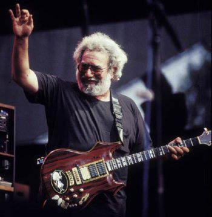

Determining the path that was traversed is useful in many applications. For example:
- What are the paths between
XandYaccording to a particular path description?
gremlin> g.v(1)
==>v[1]
gremlin> g.v(1).out.name
==>vadas
==>lop
==>josh
gremlin> g.v(1).out.name.path
==>[v[1], v[2], vadas]
==>[v[1], v[3], lop]
==>[v[1], v[4], josh]
gremlin> g.v(1).outE.inV.name
==>[v[1], v[2], vadas]
==>[v[1], v[4], josh]
==>[v[1], v[3], lop]
gremlin> g.v(1).outE.inV.name.path
==>[v[1], e[7][1-knows->2], v[2], vadas]
==>[v[1], e[9][1-created->3], v[3], lop]
==>[v[1], e[8][1-knows->4], v[4], josh]If the path step is provided closures then, in a round robin fashion, the closures are evaluated over each object of the path and that post-processed path is returned.
gremlin> g.v(1).outE.inV.path{it.name}{it.weight}{it.name}
==>[marko, 0.5, vadas]
==>[marko, 0.4, lop]
==>[marko, 1.0, josh]
gremlin> g.v(1).as('x').outE.inV.loop('x'){it.loops < 3}.path{it.name}{it.weight}
==>[marko, 1.0, josh, 1.0, ripple]
==>[marko, 1.0, josh, 0.4, lop]
gremlin> g.v(1).as('x').outE.inV.loop('x'){it.loops < 3}.path{it.id}
==>[1, 8, 4, 10, 5]
==>[1, 8, 4, 11, 3]
g = new TinkerGraph()
g.loadGraphML('data/graph-example-2.xml')Using the Grateful Dead graph diagrammed in Defining a More Complex Property Graph, lets determine the outE.inV paths that exist between Dark Star and Jerry Garcia. Be sure to restrict this query to some max number of loops (less than 4 for this example) to prevent an infinite loop. The query below states:
- get vertex 89 (Dark Star)
- get the out going edges of the current vertex
- get the incoming (head) vertices of the current edge
- if the object hasn’t been looped 4 times, loop back to
outE(emit, the object if its Jerry Garcia) - get the paths taken from Dark Star to Jerry Garcia
gremlin> g.v(89).as('x').outE.inV.loop('x'){it.loops < 4}{it.object.getProperty('name')== 'Garcia'}.path
==>[v[89], e[7122][89-sung_by->340], v[340]]
==>[v[89], e[7021][89-followed_by->83], v[83], e[7158][83-sung_by->340], v[340]]
==>[v[89], e[7023][89-followed_by->206], v[206], e[7912][206-sung_by->340], v[340]]
==>[v[89], e[7006][89-followed_by->127], v[127], e[7786][127-sung_by->340], v[340]]
==>[v[89], e[7024][89-followed_by->49], v[49], e[7182][49-sung_by->340], v[340]]
==>[v[89], e[7025][89-followed_by->129], v[129], e[7102][129-sung_by->340], v[340]]
==>[v[89], e[7028][89-followed_by->130], v[130], e[7406][130-sung_by->340], v[340]]
==>[v[89], e[7018][89-followed_by->160], v[160], e[7082][160-sung_by->340], v[340]]
==>[v[89], e[7034][89-followed_by->91], v[91], e[7360][91-sung_by->340], v[340]]
==>[v[89], e[7017][89-followed_by->57], v[57], e[7126][57-sung_by->340], v[340]]
==>[v[89], e[7032][89-followed_by->140], v[140], e[7058][140-sung_by->340], v[340]]
==>[v[89], e[7015][89-followed_by->141], v[141], e[7108][141-sung_by->340], v[340]]
==>[v[89], e[7010][89-followed_by->94], v[94], e[7340][94-sung_by->340], v[340]]
==>[v[89], e[7029][89-followed_by->4], v[4], e[7064][4-sung_by->340], v[340]]
==>[v[89], e[7021][89-followed_by->83], v[83], e[1429][83-followed_by->5], v[5], e[7582][5-sung_by->340], v[340]]
==>[v[89], e[7021][89-followed_by->83], v[83], e[1434][83-followed_by->89], v[89], e[7122][89-sung_by->340], v[340]]
...